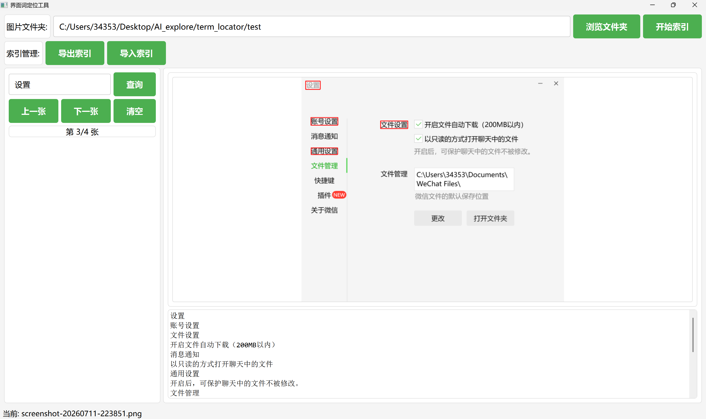
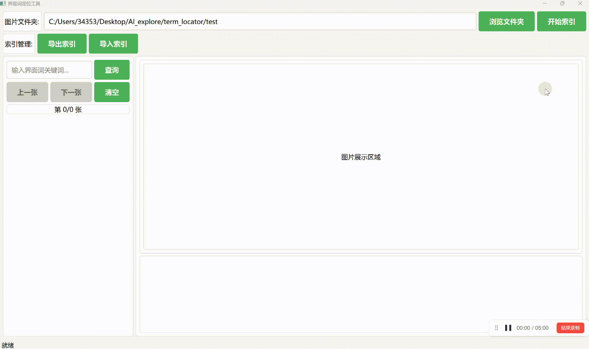

在软件界面翻译与本地化工作中，译员需要确认每一个界面词的准确含义和出现位置，传统工作方式存在以下痛点：
仅凭 Excel / CSV 术语表翻译界面词时，看到的只有孤立的文字。例如"设置"既可能是名词（Settings），也可能是动词按钮（Set / Configure），脱离界面上下文极易误译
想确认界面词的实际语境，只能在软件里逐层点击菜单、逐个打开对话框翻找；大型软件界面层级深，找一个词可能要花十几分钟，还容易遗漏
界面截图本质是图片，不含可搜索文本，Ctrl+F 完全失效，成百上千张图只能逐张打开、靠肉眼查找
每次翻译或校对都要把截图重翻一遍；换人协作时，上一个人查过哪些图、词在哪张图上，完全无法复用
同一个界面词可能散落在多张截图中，人工翻看工作量大、容易漏看，也无法确认"是否所有位置都找全了"
界面分为顶部操作区、左侧查询面板、右侧图片与文本区、底部状态栏四个部分：

顶部选择截图文件夹并管理索引，左侧输入关键词查询，右侧查看红框高亮截图与 OCR 文本
| 控件 | 说明 |
|---|---|
| 图片文件夹输入框 | 显示已选择的截图文件夹路径（只读），提示文字"请选择包含界面截图的文件夹..." |
| 浏览文件夹 | 点击弹出文件夹选择窗口；选中后状态栏提示该文件夹中共有多少张支持的图片 |
| 开始索引 | 对文件夹中的全部图片执行批量 OCR。未选文件夹时灰色不可用；识别过程中临时置灰，进度在状态栏实时显示 |
| 控件 | 说明 |
|---|---|
| 导出索引 | 将当前 OCR 索引另存为 JSON 文件，便于备份或发送给同事共享；无索引数据时为灰色 |
| 导入索引 | 加载一份已有的索引 JSON，无需重新 OCR。若截图不在原路径下，再用"浏览文件夹"选择本机截图文件夹，程序会自动按文件名匹配显示 |
| 控件 | 说明 |
|---|---|
| 关键词输入框 | 提示文字"输入界面词关键词..."，点击"查询"或直接按回车开始检索 |
| 查询 | 在全部已索引截图中检索包含关键词的截图 |
| 上一张 / 下一张 | 在命中的截图之间切换；已经是第一张 / 最后一张时对应按钮自动置灰 |
| 清空 | 清除关键词输入和当前查询结果，图片区恢复初始提示 |
| 第 X/Y 张 | 显示当前是命中结果中的第几张 / 共命中多少张（无结果时显示"第 0/0 张"） |
标题为"OCR 识别文本"，以等宽字体列出当前截图 OCR 识别出的全部文字（只读），可与上方红框截图对照阅读，完整了解该界面的菜单、按钮、提示语等上下文信息。
实时显示当前工作状态，例如：

选择截图文件夹 → 开始索引 → 输入关键词查询 → 红框定位 → 上一张/下一张浏览
term_locator.exe 打开工具（请保持 exe 与 _internal 文件夹在同一目录）。若程序同目录已有 ocr_index.json，启动时会自动加载ocr_index.json，弹窗提示处理结果仅识别图片文件，不支持 PDF；如手册为 PDF，请先将页面导出或截图为图片后再索引。
ocr_index.json 中，下次启动自动加载；大批量截图只需识别一次，之后打开程序即可直接查询
_internal 文件夹保持在同一目录，请勿单独移动 exe 文件
操作系统：Windows 7 及以上
依赖：免安装，无需安装 Python 或任何运行环境，双击 exe 即可运行
| 文件 | 说明 |
|---|---|
term_locator.exe | 主程序（双击运行） |
_internal/ | 运行时依赖库（请勿删除或移动，必须与 exe 同目录） |
ocr_index.json | 默认索引文件（首次索引后自动生成，可删除后重建） |